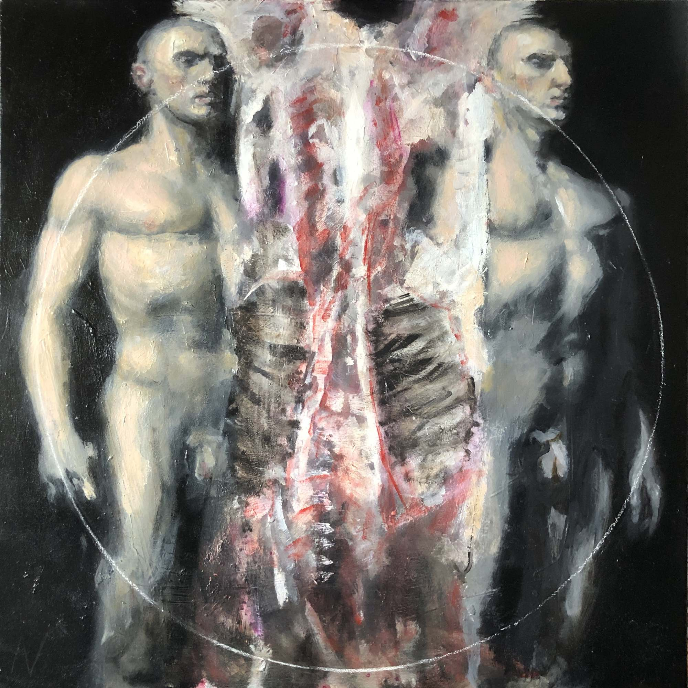

Deelnemers
Klik op een naam om het werk, de beschrijving en de bijbehorende tekst te bekijken. Niet-ingeleverde onderdelen blijven bewust leeg en kunnen later worden aangevuld.

Uitgelicht werk
Machiel van Soest
Kijk zonder labels.
Kijk vrij.
Gewoonlijk wordt aangenomen dat er een duidelijk onderscheid bestaat tussen amateurkunst en professionele kunst, en dat dit onderscheid vooral een verschil in niveau is: de professional zou over meer vakmanschap en zeggingskracht beschikken dan de amateur. Bij nadere beschouwing houdt die aanname zelden stand.
Lees het volledige statementBezoek
Vrije Kunst
Galerie de Kleedkamer
Weimar’s Wijkpaleis
Weimarstraat 300
Den Haag
Opening
Vrijdag 24 juli
17.00 uur